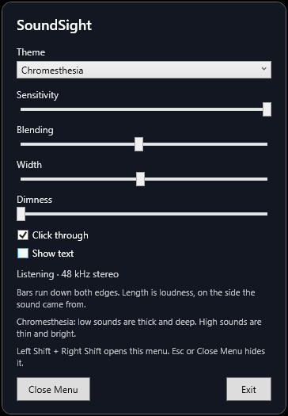

Along the bottom. Explosions, engines, impacts, bass. The row is about twice as tall as a high row, and the color stays deep even when the hit is loud.
See the sound without looking away from the game.
SoundSight is a Windows overlay for deaf and hard of hearing players. It listens to the same stereo mix as your speakers or headphones and draws it down the left and right edges of the screen.
The game stays in the middle. Sound stays at the edges.
- Low, thick
- Middle
- High, thin
Made for play, not for a second look
A lot of sound cues in games are easy to miss if you cannot hear them clearly: a step to your left, a reload, a voice, a shot, an engine. Captions help with speech. They do not show you where a noise came from, or whether it was a low boom or a high crack, and they sit where you are trying to aim.
SoundSight leaves the center of the screen alone. The bars grow inward from the edges, in the part of your vision that notices movement and brightness while you watch the game. Clicks pass through the overlay, so the mouse still belongs to the game.
Three things are readable at a glance:
- Side. The left edge is the left channel. The right edge is the right channel. A sound on one side lights that edge.
- Loudness. A louder sound reaches farther toward the center. A short tick stays at the peak for about half a second, so a single step or shot does not vanish between frames.
- Kind of sound. With Chromesthesia on, low sounds are thick and deep, middle sounds are a clear teal, and high sounds are thin and bright.
You do not install anything into the game. If Windows is playing it, SoundSight can draw it. That includes the game, a call, or a video.
Chromesthesia
Chromesthesia is a form of synesthesia. For people who have it, sound brings color, brightness, and shape along with it. A note is not only heard. It is also seen, without them choosing to picture it.
There is no single color chart that every person shares. Hue is personal. What shows up across many accounts, and in the way most people already match sound to pictures, is a smaller set of habits:
- Low sounds feel large, heavy, and dark.
- High sounds feel small, sharp, and bright, sometimes close to white.
- Louder sounds feel more saturated and more luminous.
- The picture hits at once. It fades after the sound, and low sounds linger longer than high ones.
SoundSight uses those habits as its playing theme. The corner of your eye catches size, brightness, and motion quickly. A row of similar bars in different rainbow colors is harder to tell apart out there. Chromesthesia puts the difference into the shape of the bar, then uses color as a second cue you can learn.
Voices, footsteps, and the body of a gunshot live around here. Teal sits between the amber below and the pale bars above, so this band reads as its own thing.
Along the top. Rustle, a ricochet, the edge of speech. Loud highs flare toward white and pick up a soft glow.
Every band appears in a fraction of a second. After the sound stops, a low band fades over roughly half a second and a high band fades faster. The Blending slider stretches or shortens that fade. The length of the bar is still loudness. Color and thickness tell you the pitch.
Chromesthesia for games. The other themes for music.
Chromesthesia is the setting to use while you play. It is the one that changes thickness, brightness, and fade with the pitch, so a boom and a click do not look like the same bar in a different color.
The other three themes are color equalizers. Each frequency gets a color, and the bars stay the same shape. They are a good way to watch a song. They are a weaker way to read a game, because the cue you can catch at the edge of your eye is mostly “a bar got longer.”
- Natural light paints the spectrum in a rainbow, low to high.
- Stereo paints the whole left edge cyan and the whole right edge magenta. Side is obvious. Pitch is not.
- Heat runs from dark red at the bottom to white at the top.
Leave the theme on Chromesthesia for a match. Switch when you want the overlay to behave like a music visualizer.
How to use it
- Start SoundSight, then start the game. The overlay covers the main monitor. It has no taskbar button. The icon sits in the system tray, by the clock.
- Play as usual. Set the game’s audio device to the same playback device Windows is using. SoundSight draws that device.
- Press Left Shift and Right Shift together to open the menu. They need to go down within about a quarter of a second of each other. Esc or Close Menu hides it. You can also double-click the tray icon, or right-click it and choose Show menu.
- Keep Click through on while you play. The menu turns it off for itself, so you can move the sliders. Close the menu before you need the mouse in the game.
- Set the theme to Chromesthesia.
- To quit, choose Exit in the menu or on the tray icon.

The menu
| Theme | Chromesthesia for games. Natural light, Stereo, and Heat for watching music. |
|---|---|
| Sensitivity | How easily bars grow. Raise it when the game is quiet and the edges barely move. Lower it when every bar is stuck at full length. The starting value is 4. |
| Blending | How long a sound stays on screen after it ends. Lower is snappier. Higher lets the fade hang on. Low sounds still fade slower than high ones. The starting value is the middle of the slider. |
| Width | How far a loud bar may reach toward the center. 100 is the longest. Drop it if the bars cover part of the view you need. |
| Dimness | Fades the overlay. Leave it low enough that a new bar still catches your eye. Raise it on a bright scene. |
| Click through | On means the game receives your clicks. Off means the overlay blocks them. Leave it on. |
| Show text | Draws “Left”, “Right”, and the frequency names. Useful while you are learning the layout. Turn it off when the words get in the way. |
The status line should say that SoundSight is listening, along with the sample rate. If the edges stay dark during a loud scene, open the menu and read that line. The usual cause is the game playing through a different device than the one Windows has set as the default.
Reading a match
- One edge moving means that side.
- Both edges moving together usually means the sound is in the center: dialogue, your own footsteps, a lot of music.
- A thick amber push is a low hit. A teal spike in the middle is often a voice, a step, or the body of a weapon. A thin bright flash at the top is a high transient.
- Music lights many rows at once. The cues that matter in a fight are the ones that appear suddenly.
SoundSight shows the stereo mix the game already created. It does not rebuild a map of the world. Front and back, or above and below, appear only when the game has already put them into loudness or tone. A second monitor stays blank. The overlay follows the primary display.